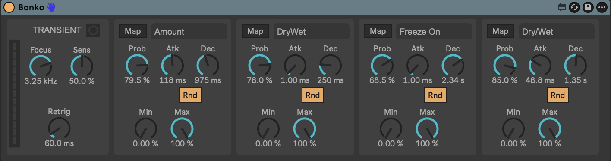

Transient-triggered modulation for Ableton Live.
Play your guitar — your effects play along.

Every pick attack fires the LED — and every mapped parameter follows.
An onset detector tuned for guitar. Focus listens to the high-frequency
bite of the pick attack, Sens sets how easily it fires, and
Retrig keeps fast strumming from machine-gunning triggers.
A meter and trigger LED show exactly what it hears.
Four independent slots. Each transient fires an attack/decay envelope with its own
Min/Max range — set Min above Max to duck instead of swell.
Prob makes slots fire by chance, and Rnd rolls new random
envelope times on every hit.
Click Map, then click any parameter on any device in your Live set —
filter cutoff, reverb mix, grain size, anything. Powered by Live's native parameter
mapping, so bindings survive saving and reloading your set.
Bonko.amxd
One self-contained file — no externals, no packages, Apple Silicon native.